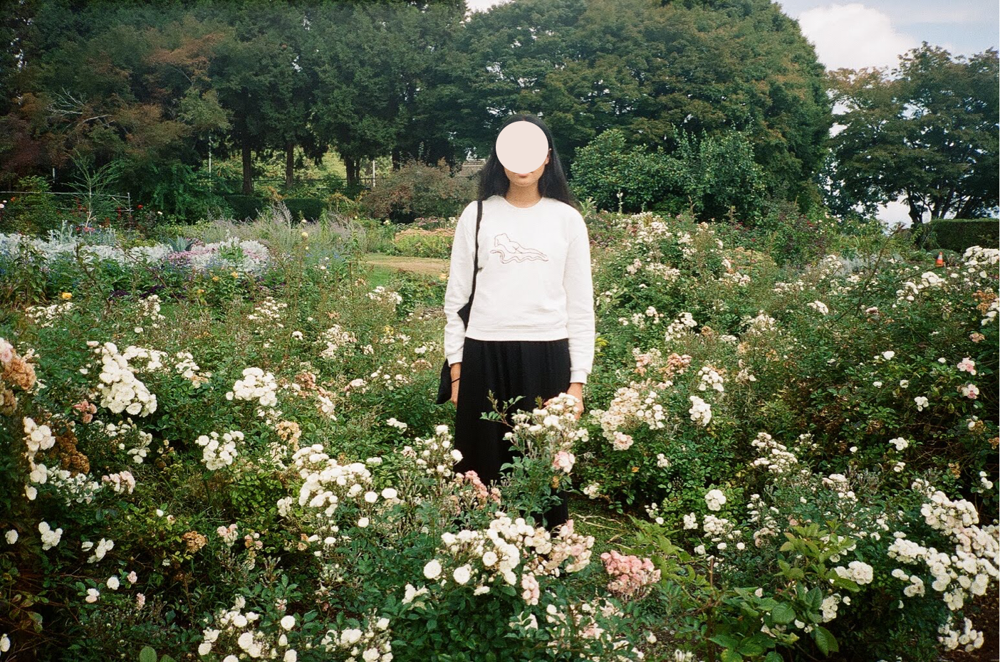

1996 - present, quezon city → toronto
Joanne is a Toronto-based product designer and interdisciplinary artist.
Her shift from formally studying engineering to practicing design and contemporary art is at the core of her holistic approach, producing a unique palimpsest in which she forms her work.
Specializing in digital experiences, she has designed products for various industries from Silicon Valley to Scandinavia.
On the side, she builds interactive hybrid art pieces, explores user-centred architecture, and writes creative fiction for public readings.
| write | joannemagbitang@gmail.com |
| connect | in/joanne-magbitang |
| tweet | @joannemagbits |